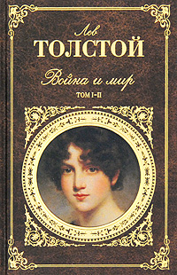
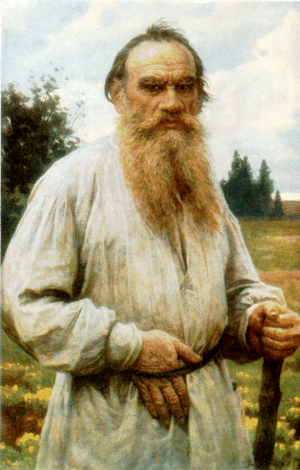

Война и мир
|  |
Тип: Книга | |
|
Описание: Великий роман-эпопея Льва Толстого чудесным образом, как огромная мозаика, сложен из тысяч картин - батальных, бальных, любовных, бытовых, политических, философских, портретных, пейзажных, психологических... |
||
|  |
Автор:
Лев
Николаевич
Толстой |